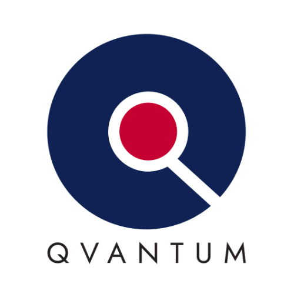

Resume
Education
2023 - Present
University Of Nyíregyháza
Bachelor's Degree in Computer Science
Computer Science, Software Developer
2021 - 2023
University Of Nyíregyháza
Higher Education Vocational Traing
Computer Science, Software Information Technology Assistant
Experience
2024 - Present
 Product Development Laboratory Engineer
Qvantum Energy Technology Kft.
During the manufacturing process, my responsibilities include the pre-configuration of product components (such as firmware installation) and the implementation of final quality control for assembled products at the IT, software, and hardware levels. Additionally, a key focus of my work is the identification and preparation of IT tools required for manufacturing and testing, as well as the design and development of internal-use software associated with these processes. Furthermore, I prioritize the automation of processes wherever technically feasible.
2023 - 2024
Principal Software and Hardware Technician
NI Hungary Kft.
Providing software and hardware support for the development of the Calibration Executive software. My primary task was the creation of development and test environments, maintenance, updating, full‑scale supervision and development of Laboratory IT devices. In addition to these, I was also responsible for the development of smaller software for internal use.
2021 - 2023
 Quality Laboratory Engineer
Quality Laboratory Engineer
Electrolux Lehel Kft.
Scheduling and execution of laboratory measurements in accordance with market, product development and quality management requirements. Documentation, recording and reporting of measurements. Analysis of improperly functioning devices, development of new measurement and simulation procedures for more in‑depth examination.
2017 - 2021
Process Analyst Technician
Electrolux Lehel Kft.
Supports of Laboratory Engineers , organization and supervision of background process supporting measurements.